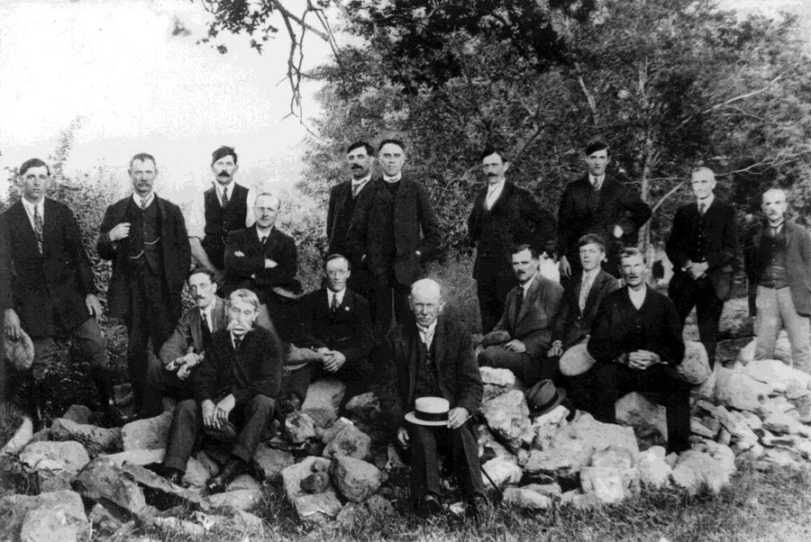
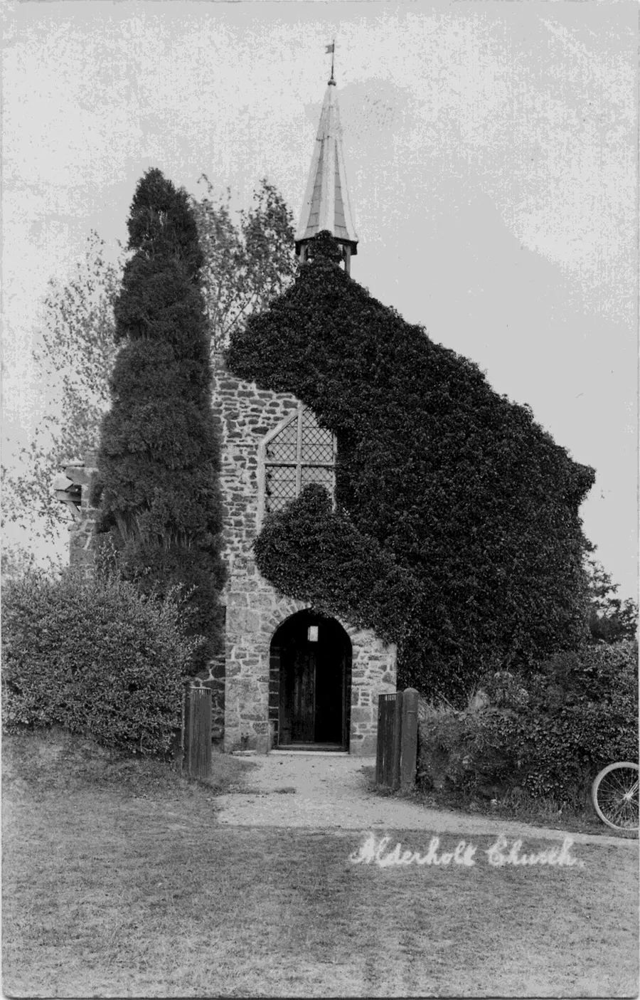
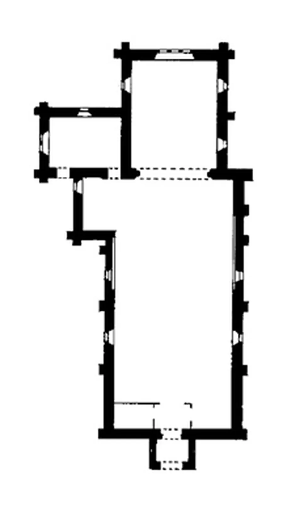
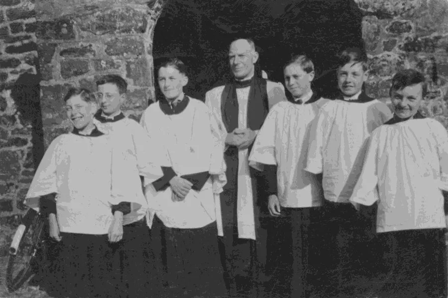
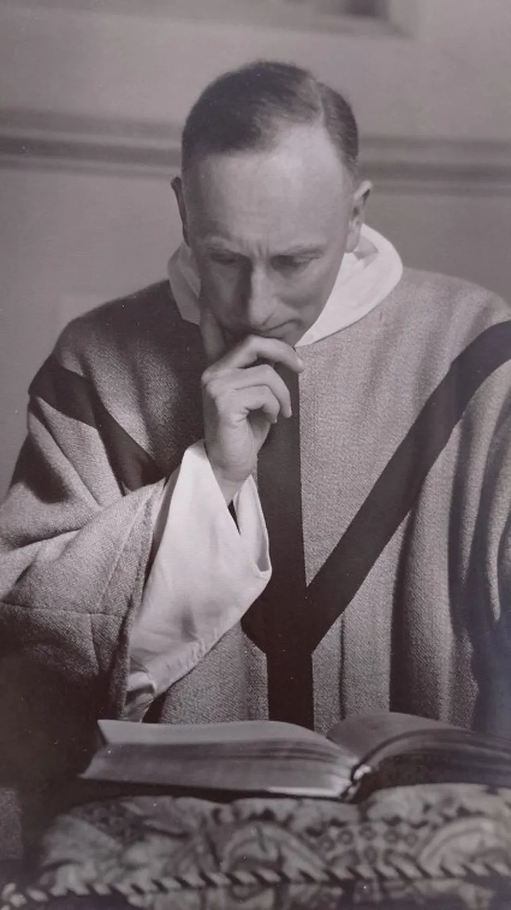
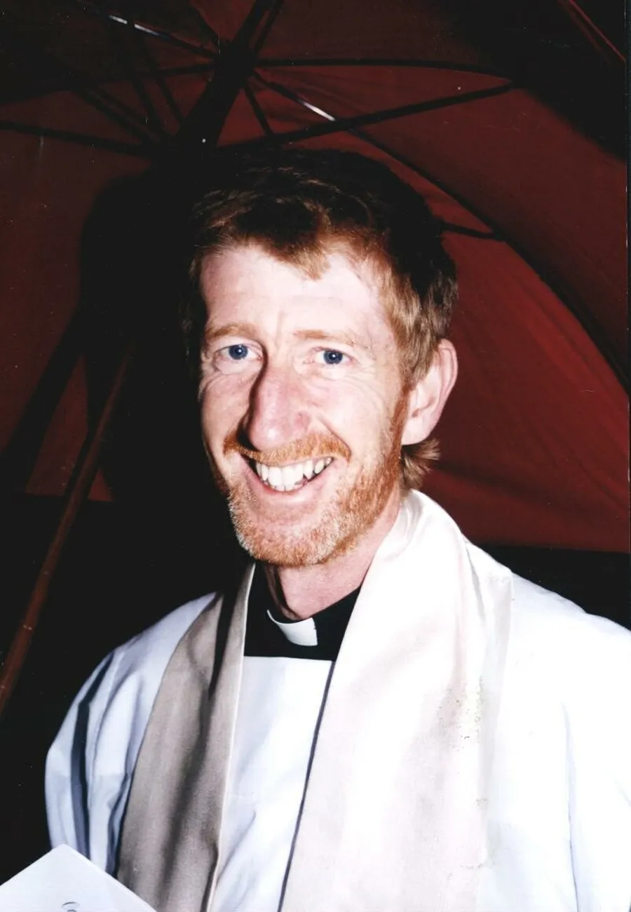
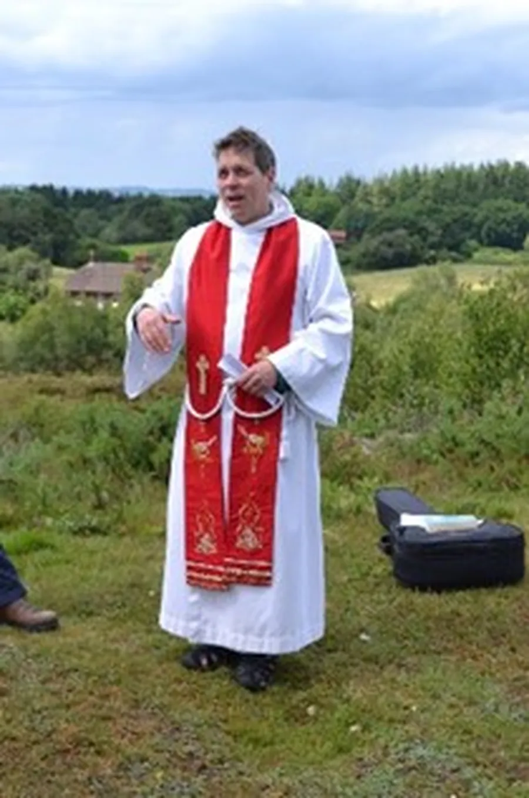

Alderholt St. James Church — Part II
by Adrian King

In May 1914 plans were prepared for rebuilding the chancel to a larger size. There was to be the addition of an organ chamber on its north side together with a vestry on the north side of the nave at its east end. The faculty application is dated 30th July 1914 and the architect was W. Marshall of Hatfield. However the First World War intervened and the work was not at that time carried out.
By the end of the war there had been a change of mind as to the form that the extension should take. A revised plan was deposited showing the proposed organ chamber and vestry transposed to their present positions and the work was carried out on this basis in 1921. At the same time the nave was lengthened by some two metres at the east end terminating with a new buttress at the south-east corner.

Matching local brown heath-stone was used for the new work but with ashlar dressings. But by this time all the quarries in the village had been worked out so an appeal was given to the parishioners from the Vicar and Churchwardens to collect as much sandstone as they could find and take it to the Church.
The people who supplied 51 loads of sandstone for the new Church Nave in 1920-23 were
- Mr. William Brewer 5 loads
- Mrs. Darney (Birch Hill) Parts of loads
- Mr. Foster 17 loads
- Mr. Fred Fry 1 load
- Mr. Hibberd 1 load
- Mrs Lucas Parts of loads
- Major Mackintosh 2 loads
- Mr. E. Nicklen 4 loads
- Mr. Sainsbury 2 loads
- Mr. Sims (Vale Acre) 1 load incl. cartage
- Mr. John Sims (Cripplestyle) 2 loads
- Mr. James Shearing 7 loads
- The Vicarage 2 loads
- Mr. Viney 5 loads
The east window of the chancel is of three graduated lancet lights grouped under a flush ashlar stone pointed tympanum externally. While the side windows, two on the south and one on the north, are single trefoil headed lights.
F. P. Pitfield said “the work of 1921 is distinctly of Gothic revival character, contrasting markedly with the less pretentious work of 1849 in the remainder of the building.”
The building work was completed within a year at a cost of £1100 (£1300). Dr. Donaldson the Bishop of Salisbury consecrated the new chancel on St. James Day, the 25th July 1922.
At this time accounts also show £35 for a new altar in memory of Rev. J. R. Sanderson and £23 for renovation to the organ before placing it in the new chamber. Rev. James R. Sanderson had died suddenly in 1911 after a dedicated ministry of 21 years.

The school children of the village collected and donated money to purchase a pulpit. It came from St. Osmund in Parkstone and had been painted red and yellow. The pulpit was restored to its original condition being a very attractive piece in the Gimson style of black stained wood with an open grid and excessive chamfering. It has been removed in recent years.
The nave windows have triangular tops instead of arches and the west facade as well as the west porch has stepped gables.
In the 1970’s the vicarage near the bottom lynch gate was sold privately and a new one was built to the north of the church.
In the 1980’s a great deal of necessary remedial work was carried out with new oak flooring on both sides of the nave, the replacement of pews and rebuilding of the bell-cote. These and many other works were carried out with great expertise and dedication by parishioners.
After a two-year project a new church hall was opened in July 1990.

At the east end of the church are two recently installed paintings by Brother Leon of Walsingham in Norfolk. These were paid for by donations in memory of loved ones and they belong to an age-old tradition of religious paintings called icons. They are painted on blocks of lime wood using only natural pigments and materials.
St. James is pictured on the left and is carrying the staff of Christ’s authority and the shell symbolising the pilgrim. James has been associated with pilgrimage down the ages. St. Michael carries the globe with the cross on top and the Sword of the Spirit for angels are agents for God’s will to be done on earth.

On the north-west corner of the church (the left corner as the church is approached from the war memorial) can be seen an odd honeycomb of circular dents in the sandstone. It is said that these were made a long time ago by children waiting for afternoon Sunday School using the old penny that they had brought for the collection.
Arthur Mee wrote in The Kings England “It is a pleasant church with something of the grave simplicity of the old tithe barns.” But not everybody spoke so highly. H. S. Goodhart-Rendall wrote concerning the church "Looks like the latest thing by E. S. Prior."
A Victorian rector gave the village a gift of a silver chalice which replaced a graceful old Pewter cup and is now displayed in a case. The silver cup of 1576 is the only one in Dorset to display the hallmarks of Exeter.
Vicars Pre 1921
| Name | Dates | Notes |
|---|---|---|
| Rev. Alfred G. (James) Lowth | 1850–1853 | *15th May 1850 |
| Rev. William Randolph | 1853–1857 | *17th May 1854 |
| Rev. Richard Hooker Edward Wix | 1857–1867 | *24th Oct 1857 |
| Rev. William Eggerton Tap | 1867–1872 | *18th Feb 1867 |
| Rev. John Rigg | 1872–1879 | |
| John William Barrow | 1879–1890 | |
| Rev. James Richard Sanderson | 1890–1911 | |
| Rev. Rupert Shiner | 1911–1912 | Priest in charge |
| Rev. Robert Stewart Macdonald | 1912–1913 | |
| Rev. Daniel Frederic Slemeck | 1913–1921 | |
| * Ordained | ||

Vicars Post 1921
| Name | Dates |
|---|---|
| Rev. Horace Henry Coley | 1921–1927 |
| Rev. Frederick William Aldous | 1927–1934 |
| Rev. Clive Essington Boulton | 1934–1954 |
| Rev. John Henry Rumens | 1912–1913 |
| Rev. Montagu Clare Callis | 1959–1965 |
| Rev. Henry Richards Hadden | 1965–1977 |
| Rev. John Arthur Henson | 1977–1984 |
| Rev. Steven James Abram | 1984–1990 |
| Rev. Phillip James Martin | 1990–2017 |
| Rev. Simon Woodley | 2018– |

